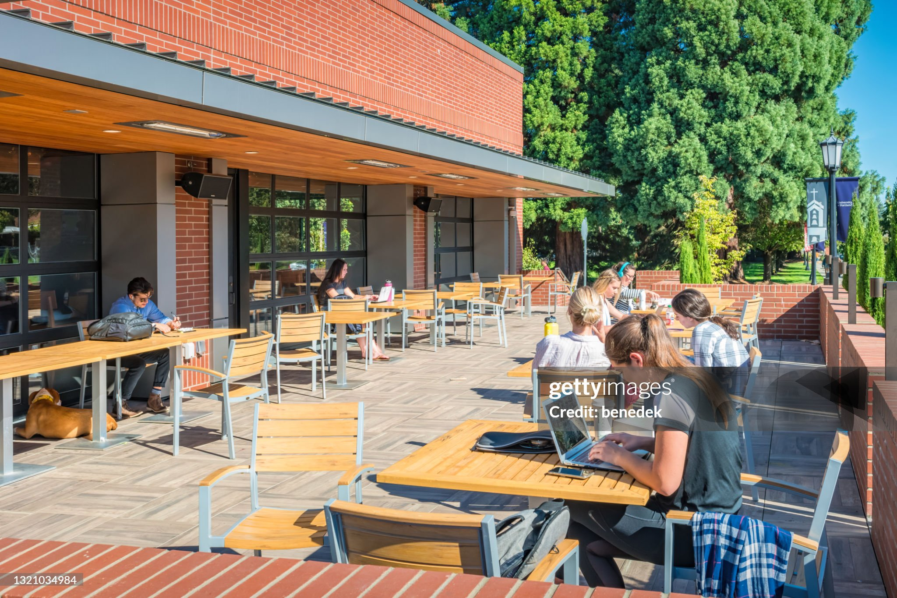

eating well on a Student Budget
Your First Year is Busy: new classes,new friends, and Long Days on Campus.It is easy to skip meal or spend your whole allowance
on milk tea. Eating regular, skip meals, helps you fucos in your class, and you do not need a big budget to do it.
Where to eat near Campus
You have more options than you think. Here are the usual go-to spots:
- The school canteen for quick rice meals between classes
- Carinderias outside the gate for cheap, filling ulam and rice
- Your own baon from home, which is the cheapest choice of all
- Convenience stores for emergency snacks, not for every meal
How to plan your weekly food Budget
A little planning on Sunday saves you on Thursday
- Check how much allowance you have for the whole week
- Set asside money for fare and whole needs
- Devide what is left for the school days
- Pack baon on at least two days to stretch your budget.
- Keep a small amount for emergencies, like a surprise project.
Quick Tips
Always bring a refillable water bottle. Water stations on campus are free, and you will
save a lot comparedto buying bottled drinks every day.

Photo by benedek
home
food guide